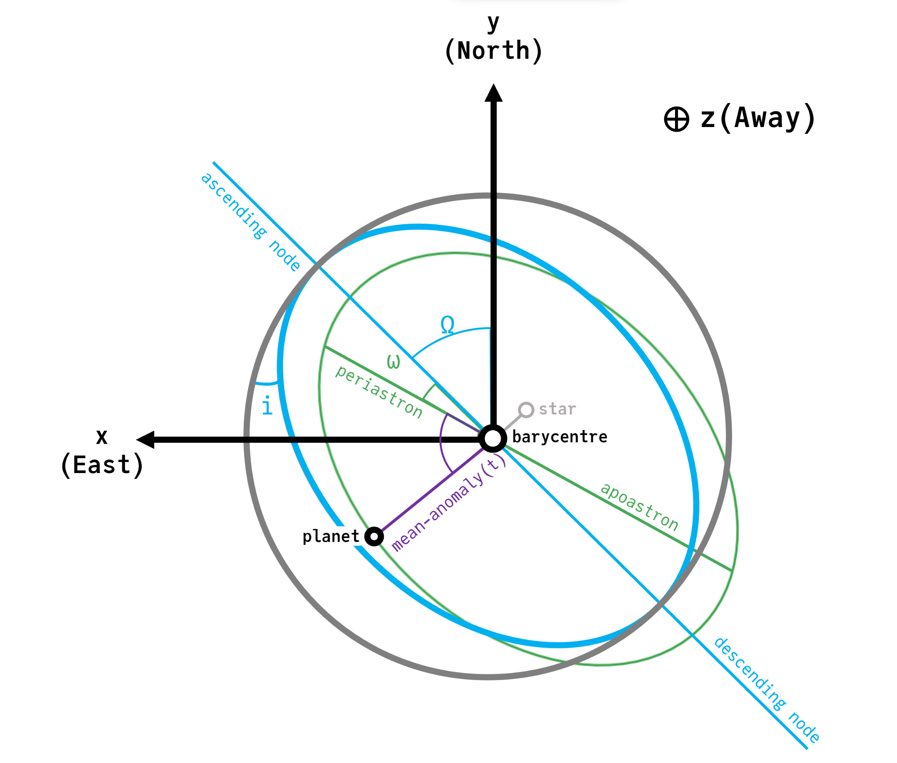

Units & Conventions
The main constructor, Visual{KepOrbit}, accepts the following parameters:
a: Semi-major axis in astronomical units (AU)i: Inclination in radianse: Eccentricity in the range [0, 1)tp: Epoch of periastron passage in days (specifically, referenced to modified julian date)M: Graviataion parameter of the central body, expressed in units of Solar mass.ω: Argument of periastronΩ: Longitude of the ascending node, radians.plx: Distance to the system expressed in milliarcseconds of parallax.
Parameters can either be specified by position or as keyword arguments (but not a mix).

This diagram shows a circular (gray), inclined (blue), and inclined eccentric (green) orbits described using the conventions of this package.
The $x$ variable increases to the left in the plane of the sky, consistent with right ascension that increases towards the East. The $y$ coordinate increases upwards towards the North. The $z$ coordinate increases away from the observer.
The ascending node is measured CCW in the plane of the sky starting from the $y$ (North) axis.
The location of the planet along its ellipse is measured along the green ellipse starting from periastron. The parameter $tp$ describes a date at which the planet made its closest approach to the star, and therefore sets the location of the planet at a given time. For bound (circular or elliptical) orbits there are infinitely many equivalent tp values, related by $t_p\prime = t_p i P$ where $P$ is the period of the planet.
See this PDF for a detailed derivation of projected position, velocity, and acceleration from these coordinates: Derivation.pdf